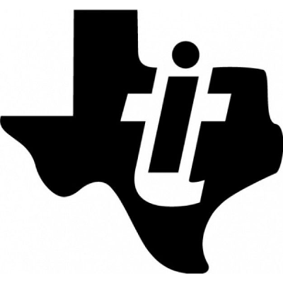

Project Brochure Looking for a brief description and images of the current active committees, projects, activities, and student engagement? Check it out here!
Corporate Packet RAS is always excited to collaborate with corporate partners through general meetings and tech talks, workshops, and social events. At the moment, we offer virtual, in-person, and hybrid events.
If you would like to become a supporter, please view our corporate packet for details.
Fall 2024 Company Partners
We would like to thank our company partners for supporting and collaborating with us. We look forward to continuing to work with you!
Gold
Texas Instruments

Please contact the corporate relations officer, Grace Li, at gracewl@utexas.edu if you have any questions or would like more information.